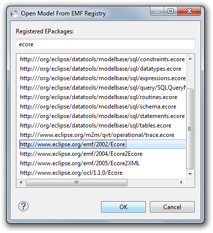
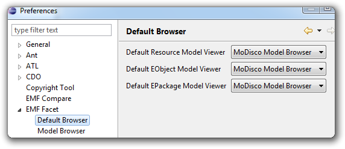
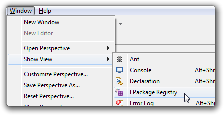
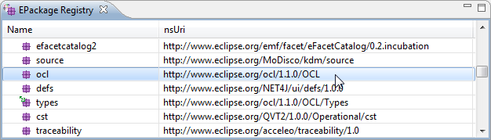

You can browse a registered meta-model from the EMF Registry using either Navigate > Open EPackage or the corresponding action in the main toolbar. The following dialog will pop up, allowing you to select a meta-model by URI :

Either double-click or press OK on the desired meta-model. It will be opened in the EMF Facet Default EPackage Browser, or in the one you would have previously indicated in the preference page.
You can choose which model browser you prefer to use, by going to Window > Preferences, in section EMF Facet > Default Browser:

And selecting which model browser you'd like to use when:
You can easily display the contents of the EMF Registry in a view, by opening the EMF Facet EPackage Registry view:

From this view, you can double click on any EPackage to browse it in your default browser.

Copyright © 2012 Mia-Software. All rights reserved. This program and the accompanying materials are made available under the terms of the Eclipse Public License 2.0 which accompanies this distribution, and is available at https://www.eclipse.org/legal/epl-2.0/.